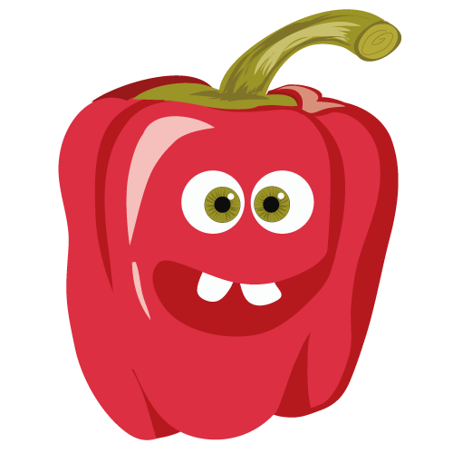
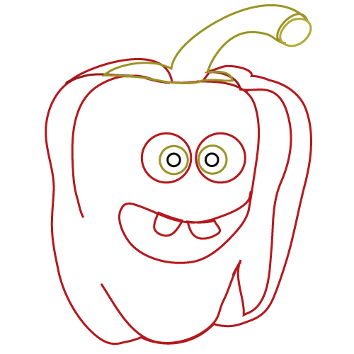

Mister Red Pepper
- Season
- I'm from
Latin America and the best period to cultivate me is during the winter time.
You can find me in the greengrocer and supermarket from June to September. - Benefit
- I'm perfect for your joints, bones and teeth.
I’m brightly colored, crunchy, and delicious. Me and my brothers, have lots of
vitamin C and we can be used in a variety of ways. - Curiosity
- Me and my family are technically a fruit and we belong to the nightshade family, along with potatoes and tomatoes.
- Fun facts
- I'm the good guy in my family. Unlike my two brothers, green and yellow, I'm much safer because I contain less traces of solanine, which is poisonous to humans.
Looking forward meeting you, until that moment discover more aboutrecipes ...
Draw me
First of all draw this shape
Now you can add the shadow lines
Add the stem

It's time to draw the face
Mister Red Pepper is ready to be colored
Add some light points